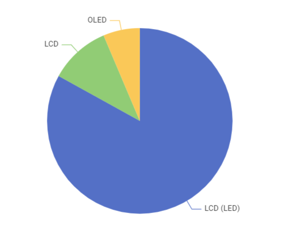
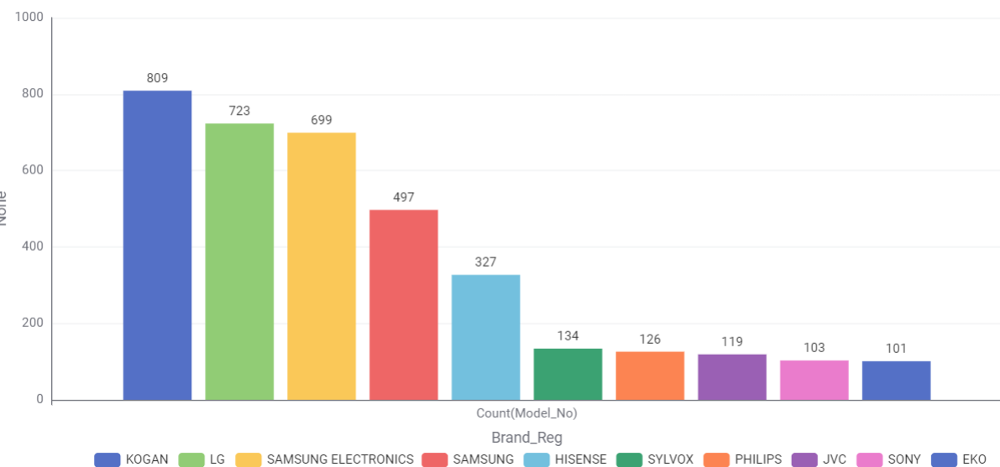
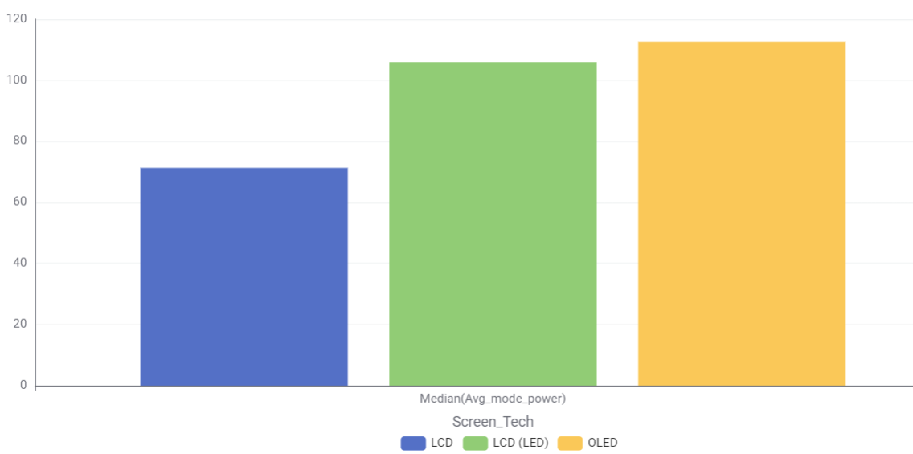
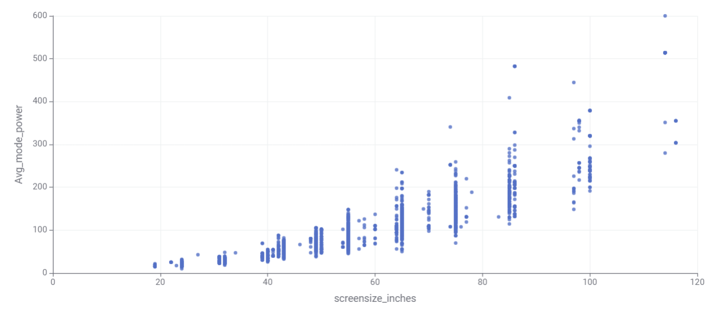
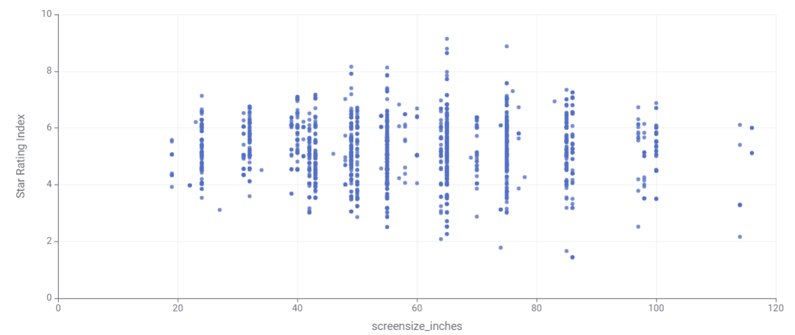

TV Energy Insights: Data Story
Using the cleaned dataset of currently available televisions, this page shows that screen size alone does not reliably predict annual running cost — some larger LED models cost more to run than smaller OLED or QLED models of similar size. The visualisation breaks running cost down by display technology so shoppers can see where the real cost differences come from, then highlights a small set of currently available models that offer the best running-cost value at common screen sizes.
Chart 1: What TV technologies are most common?

Most common TV technology in Australia is LCD(LED).
Chart 2: What screen sizes are most frequently bought?

65-, 55-, and 75-inch TVs are the most common screen sizes, respectively.
Chart 3: Which brands have the largest number of models?

KOGAN, LG, and Samsung Electronics have the largest number of models on the Australian market, respectively.
Chart 4: Which screen type uses the least power?

LCD has the least power usage, followed by LED and OLED, respectively.
Chart 5: What is the relationship between screen size and power usage?

This chart show that larger screen use more power.
Chart 6: What is the relationship between star rating and screen size?

Star ratings are fairly distributed across all sizes; bigger TVs can still be efficient if well designed.